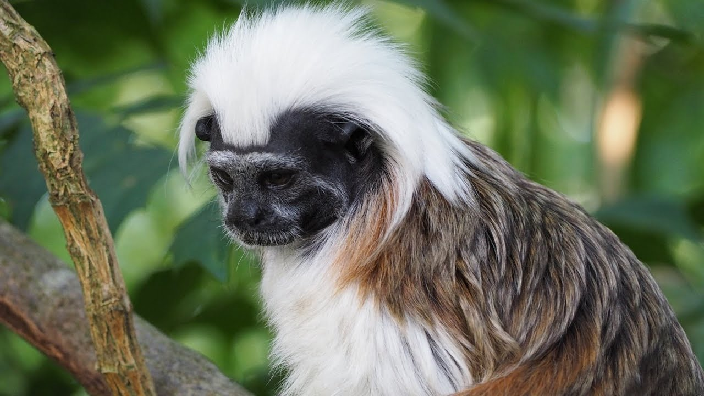

El tamarino multicolor ha evolucionado en una pequeña área en el noreste de la selva amazónica. Su hábitat junto al río proporcionaba todas las presas y vegetación que necesitaban, pero a fines del siglo XVII se produjo un asentamiento humano. Este asentamiento ahora se ha convertido en el puerto de Manaus, una capital regional con más de dos millones de residentes. Gran parte del hogar de tamarino ha sido pavimentado, y aunque se puede encontrar en algunas áreas protegidas, el tamarino de manos rojas, especie invasora, le está "robando" la mayor parte de los alimentos y el poco hábitat que les queda. A diferencia de algunas especies de monos, el tamarino de varios colores no ha podido adaptarse a la vida urbana, y con frecuencia es asesinado por perros, automóviles y líneas eléctricas cuando cruza la ciudad entre fragmentos de bosque aislados. La presión económica continúa empujando a Manaus a crecer, haciendo que la extinción de este primate tan intrigante sea una posibilidad cada vez más real.
El tamarino multicolor ha evolucionado en una pequeña área en el noreste de la selva amazónica. Su hábitat junto al río proporcionaba todas las presas y vegetación que necesitaban, pero a fines del siglo XVII se produjo un asentamiento humano.